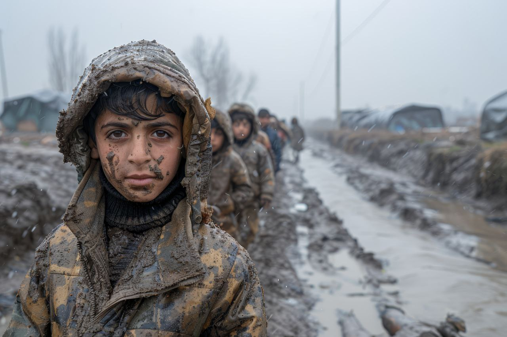

War crimes
War crimes are crimes that come under the collective name of core international crimes. Core international crimes are some of the gravest crimes in international law,examples of the of them can include;the crime of genocide,crimes against humanity, war crimes and torture.Through international treaties the UK has a responsibility to investigate and prosecute those who have committed core international crimes. Alternatively, there may be those in the uk who have witnessed offences or are survivors of such crimes.If a UK resident has been responsible for core international crimes anywhere in the word, they may be investigated and prosecuted in the UK.
The impact of wars on SDGs
No one can ignore the devastating impact that wars have on the world’s ability to achieve the Sustinable Development Goals agreed upon in paris in 2015. Unfortunately, Wars often unflod ruthlessly, brining about significant loss and destruction,as well as a massive depletion of economic resources.Wars alter the flow of money and energy significantly,divertingma country’s financial resources and human capabilities towards destructive military aspects. This diversion hinders essential sustinsble development efforts, including investments in renewable energy sources, environmental preservation and social welfare programs.
Typically, wars conclude with the reconstruction of essential infrastructure, such as roads, bridges, power stations and factories, ehich have been destroyed. This makes it challenging to promot sustinable practices because infrastructure reconstruction leads to increased resource consumption and the squandering of numerous sustainable development opportunities.

peace and security around the world
High levels of armed violence and insecurity have a destructive impact on a country’sdevelopment, affecting economic growth, and often resulting in long-standing grievances among communities that can last for generations. Sexual violence, crime, exploitation, and toyure are also prevalent where there is conlict or no rule of law, and countries must take measures to protect those who are most at risk.During the last 15 years, world has witnessed a rise in terrorist attacks worldwide; the Arab Spring, ongoing conflict in Gaza, the rise of terrorist groups in Iraq, Syria, Pakistan, Afghanistan, and parts of Africa; several mass shootings and incidents of civil unrest in America-Paris-Dhaka-Belguim-Turkey, and most recently,the refugee crises in Europe.
According to the organization for Economic Cooperation and Development,of the seven countries unlikely to meet a single MDG at the end of 2015, all were affected by high levels of conflict and violence in recent years. Unfortunately, the word as a whole has become incrementally less peacaful in the lust decade.The instatute of economics and Peace’s 2018 Global Peace Index Report finds that global peacefulness declined for the fourth straight year, with the average level of country peacefulness deteriorating by 0.27% last year, as a result of growing authoritarianism, unresolved conflicts in the Middle East and North Africa, and increased political instability across the world.

Egypt:war crimes in sinai
Egyptian militaryand police forces in the sinai peninsule are committing serious and widespread abuses against cvilians,Human Rights watch said in a report released today.Some of these abuses, part of an ongoing campaign against membors of the local ISIS affiliate, the sinai Province group, amount to war crimes.Human Rights watch’s two-year investigation documented crimes including mass arbitrary arrestes, enforced disappearancecs,torture, extrajudicial,killings, and possibly unlawfull air and ground attacks against civilians.While Egyptian military and police forces were responsible for the majority of abuses documented in the report, extremest millitants have also committed horrific crimes, including kidapping and torturing scores of residents,killing some,and extrajudicially executing detained security force members.
What we propose:Goal 16 is the Core of Sustainable Development Goals
There is no doubt that the inclusion of this goal in the SDGs is significant.However, more importantly, without which none of the other goals can be sustained.It should be in the core to make realize other goals.SDG 16 is just as complex as it is significant. It is persuasive to view peace,security,and governance as complex political issues that fall squarely in the purview of governments and security agncies or as issues specific to 'conflict zones'However,SDG 16 is not just about ending wars and reducing the incidence of violence.In addition to two targets on reducing violence, SDG 16 also has a focus on important drivers of conflict including access to justice,corruption and bribery,transparency,fundamental freedoms, participatory decision-making.
Government and International Organizations must put Goal 16 as a prerequisite and to the core of SDGs.There should be unambiguous indicators to reflect peace is prevailing.Means of implementation need to be focused. The spread of weapons of mass destruction poses a threat to the international community. Indiscriminate trade in conventional arms and the use of chemical,biological,radiological,and nuclear weapons and ballistic missiles raises serious humanitarian and security concerns. Sale of arms and innovating on mass destructive weapons need to be reduced. Although primary responsibility for ensuring peace rested at the national level, such responsibility must be accompanied by responsibility must be accompanied by responsible behavior and international cooperation.Global processes need to be leveraged to facilitate national-level action. This should include building a global partnership that brings together supporters of peaceful,justice,and inclusive societies,providing context-specific support,and addressing transnational drivers of conflict, such as illicit financial flows and arm flows. All stakeholders need to implementation.Serious efforts toward achieving global peace and justice are not visible. Goal 16 as a prerequisite and the core of all SDGs.SDGs by 2030 cannot be achieved without glopbal peace.The gap between aspirations and intent must be reduced.
Ways to volunteer to help victims of war crimes
Over 400 million children live in countries where is war or other violent conflicts. Often forced to flee their homes in search of safety, many remain displaced for extended periods of time, or never return home. Some are orphaned or separated from parents and caragivers.So follow the following methods to volunteer:
-
Donate to reputable organization that support vitims of war crimes. Your financial contribution can help provide essential services such as food, shelter, medical care, and legal assistance.
-
Volunteer your time and skills to organizations working with victims of war crimes. This could involve tasks such as fundraising, advocacy, translation, or providing counseling services.
-
Raise awareness about war ceimes and their impact on victims. Share information on social media, organize eventa, or write letters to your representatives to advocate for justice and support for victims.
-
Support organizations working to document and prosecute war crimes. Your support can help ensure that perpetrators are held accountable and victims receive the justice they deserve.